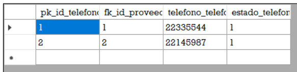

El formulario se visualiza de forma que este dentro del MDI del programa, en la parte inferior de la ventana se puede visualizar la fecha y hora actual en la que transcurre
el acceso al mismo formulario.
Posee un Navegador un los componentes donde usted podrá ingresar su información
Este es un componente que es para su mejor interacción con el programa. Puede apreciar de izquierda a derecha
los siguientes botones: Insertar, Modificar, Eliminar, Refrescar, Guardar, Cancelar, Consultar,
Imprimir, Inicio, Anterior, Siguiente, Último, Ayuda y Salir.
A continuación, le damos una pequeña explicación de la función de cada botón:
Insertar: Al inicio el formulario se encuentra bloqueado, al dar click en este botón podrá ver que se habilitan
los componentes, esto le servirá para guardar datos.
Modificar: Permite la modifiación de datos, debe tener seleccionada una fila o dato del grid, a través de las flechas.
Eliminar: Elimina datos del sistema, al igual que modificar, debe tener seleccionado un dato del grid a través de las flechas
Refrescar: Recarga el formulario
Guardar: Inserta datos al sistema.
Cancelar: Si estaba en alguna opción de inserción le regresa al estado del formulario, similar a cuando se ingresa a este.
Consultar: Puede realizar búsquedas.
Imprimir: Un reporte es mostrado de acuerdo a los datos y puede hacer su respectiva impresión.
Inicio: Lo lleva al primer dato del Grid.
Anterior: Navega de forma inversa en el Grid.
Siguiente:Navega hacia delante en el Grid.
Último: Lo lleva al último dato del Grid.
Ayuda: Le permite visualizar este documento para su mejor comprensión del sistema.
Salir: Salida del formulario.

A continuación, le mostramos un ejemplo de cómo debe ingresar datos al sistema a través de este formulario.
Este es el mensaje que debe ver en pantalla para confirmar el ingreso de datos.

Los datos ingresado se muestran en el grid, a si como los que ya están en el sistema.
